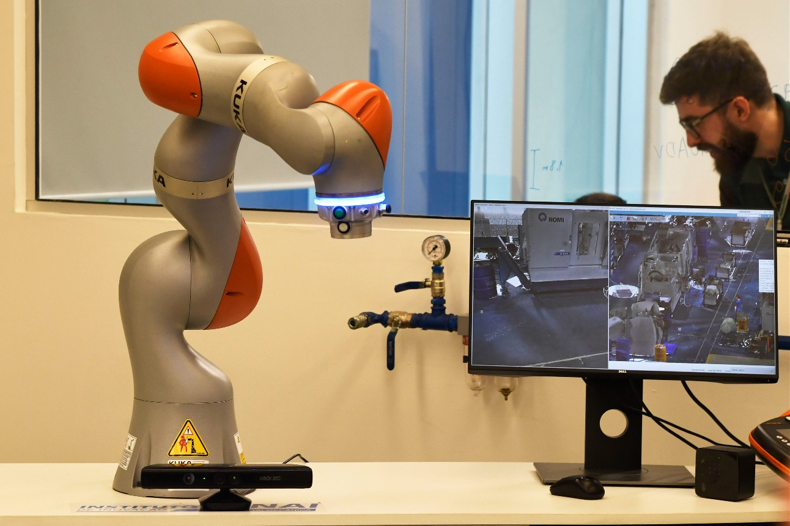
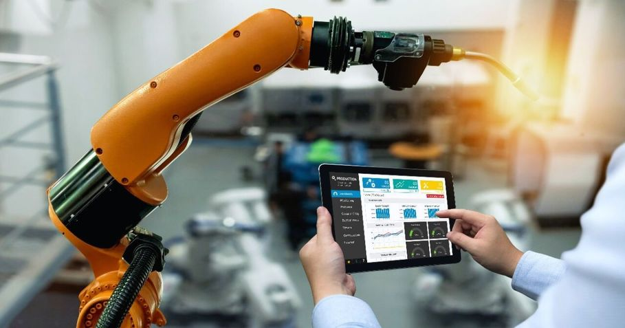
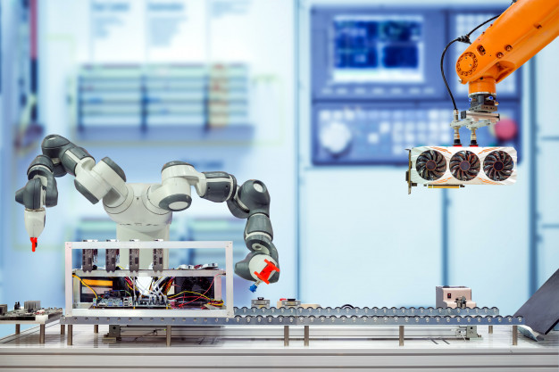

Estatísticas do Projeto
| Projeto |
Iniciação |
Planejamento |
Execução |
Monitoramento e Controle |
Encerramento |
| TechVision |
Gabriella Moraes |
Lucas Santana |
Gabriel Schincaglia |
Vanessa Custódio |
Júlia Lopes |
| DataPulse |
Fernando César |
Elaine Catarine |
Arthur Henrique |
Isabelle Veloso |
Jaqueline Ribeiro |
| SmartNet |
Eloisa Gardeal |
Ruan Pablo |
Adrian Luis |
Pedro Henrique |
Heloa Cristal |
| VirtuSpace |
Eduarda Vitorio |
Larissa Camargo |
Bernardo Otaviano |
Kellen Carvalho |
Bryan Arthur |
| Apple Tech |
Heitor Silva |
Bruno Mars |
Henrique Souza |
Cristiano Araujo |
Marcos Henrique |
TechVision
- Gabriella Moraes: Responsável pela fase de Iniciação.
- Lucas Santana: Responsável pela fase de Planejamento.
- Gabriel Schincaglia: Responsável pela fase de Execução.
- Vanessa Custódio: Responsável pela fase de Monitoramento e Controle.
- Júlia Lopes: Responsável pela fase de Encerramento.
DataPulse
- Fernando César: Responsável pela fase de Iniciação.
- Elaine Catarine: Responsável pela fase de Planejamento.
- Arthur Henrique: Responsável pela fase de Execução.
- Isabelle Veloso: Responsável pela fase de Monitoramento e Controle.
- Jaqueline Ribeiro: Responsável pela fase de Encerramento.

SmartNet
- Eloisa Gardeal: Responsável pela fase de Iniciação.
- Ruan Pablo: Responsável pela fase de Planejamento.
- Adrian Luis: Responsável pela fase de Execução.
- Pedro Henrique: Responsável pela fase de Monitoramento e Controle.
- Heloa Cristal: Responsável pela fase de Encerramento.

VirtuSpace
- Eduarda Vitorio: Responsável pela fase de Iniciação.
- Larissa Camargo: Responsável pela fase de Planejamento.
- Bernardo Otaviano: Responsável pela fase de Execução.
- Kellen Carvalho: Responsável pela fase de Monitoramento e Controle.
- Bryan Arthur: Responsável pela fase de Encerramento.

Appple Tech
- Heitor Silva: Responsável pela fase de Iniciação.
- Bruno Mars: Responsável pela fase de Planejamento.
- Henrique Souza: Responsável pela fase de Execução.
- Cristiano Araujo: Responsável pela fase de Monitoramento e Controle.
- Marcos Henrique: Responsável pela fase de Encerramento.